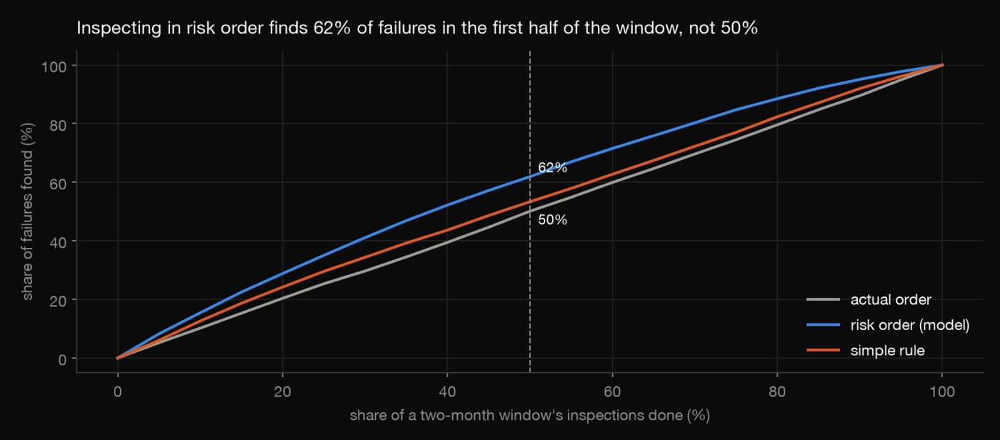
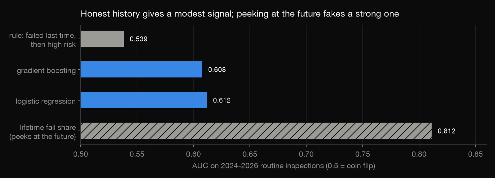
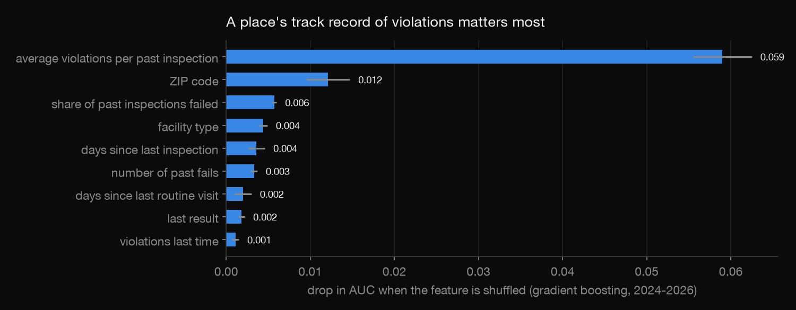
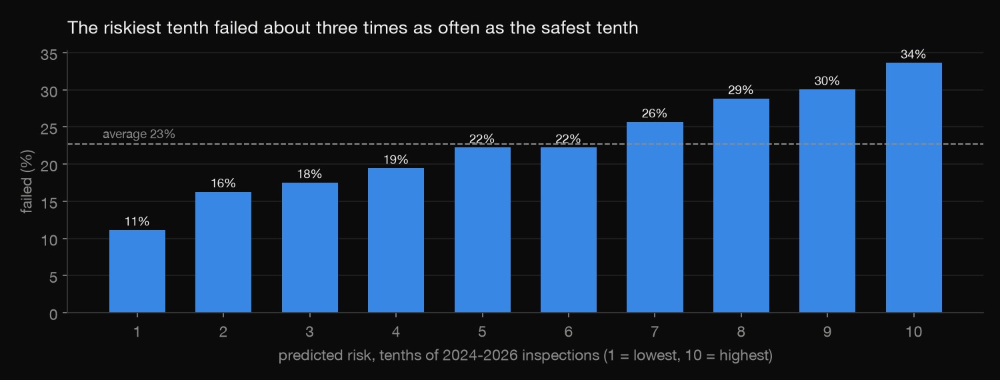
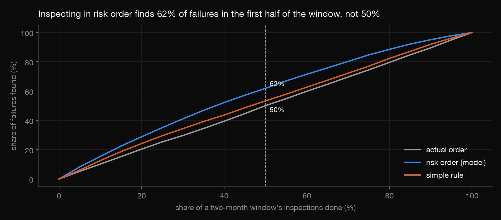

Python · Predictive modeling · 2026-10
Which Kitchens to Inspect First?
Ranking Chicago's routine food inspections by risk of failing, from each place's past inspections only, and showing that inspecting in that order would find failures about five days sooner.

A modest model (AUC 0.61) on public data only: no inspector assignments or weather. Before real use it would need a check that risk ordering doesn't concentrate visits in some neighbourhoods.
01 — The problem
Chicago does about 10,000 routine food inspections a year, and roughly one in five fails. Every week a failing kitchen goes unvisited is a week of risk to diners. Inspectors can't visit everyone at once, but they can choose the order. Can a place's inspection history say who to visit first, and how much sooner would that find the failures?
02 — What I built
A predictive model on the City of Chicago's food-inspection records (163,288 inspections, July 2017 to September 2026):
- History features built strictly from each place's earlier inspections, checked by an independent slow loop.
- A time-leak demo: using future results fakes an AUC of 0.81.
- Logistic regression vs gradient boosting vs a simple rule, trained on 2019–2023 and tested on 2024–2026.
- A scheduling test that re-orders real two-month windows by risk, the question an inspection manager actually asks.
03 — How it was built
- 01
Get the inspections
The City publishes every food inspection: license number, facility type, risk category, ZIP, date, type, result and the violation notes.
download.pypages through the API 50,000 rows at a time from July 2017. That gives a year and a half of history before the training period starts.q = urllib.parse.urlencode({"$select": COLS, "$where": "inspection_date >= '2017-07-01'", "$order": "inspection_id", - 02
Build features from the past only
For each routine inspection, the features describe what the city knew the day before: how many earlier inspections and fails, the share passed with conditions, the average number of violations, days since the last visit, and recent complaint visits. Cumulative counts are shifted by one day, because some places get two inspections on the same date.
check.pyrecomputes 400 random histories with a slow loop over earlier rows and confirms they match.day["prior_fails"] = g["fails"].cumsum() - day["fails"] - 03
Catch the time leak
The tempting feature is a place's overall fail rate. Computed over all its inspections, including this one and later ones, it scores AUC 0.812. But on scheduling day those results don't exist yet. With honest history the best model scores 0.612.

lifetime = (done["results"] == "Fail").groupby(done["license_"]).mean() # WRONG on purpose: uses this and future results - 04
Train on the past, test on the future
Models train on 34,594 routine inspections from 2019–2023 and are scored on 21,759 from 2024 to September 2026. Logistic regression edges out gradient boosting, and both beat a "failed last time, then high risk" rule. A place's track record (average violations per past inspection) matters most. The last result alone matters little, because a failed visit is usually followed by a re-inspection.


- 05
Simulate the schedule
AUC doesn't tell a manager much. So within each two-month window, the test keeps the real inspection dates and the same number of visits, but hands the dates out in risk order. In risk order, 62% of failures are found in the first half of the window, against 50% in the actual order. That's 5.1 days sooner on average, and a random shuffle changes nothing.

new_date = pd.Series(dates, index=order.index)
04 — Results
| Model (2024–26) | AUC | Top 20% |
|---|---|---|
| Logistic regression | 0.612 | 32.4% |
| Gradient boosting | 0.608 | 31.8% |
| Simple rule | 0.539 | 27.8% |
| Peeks at future | 0.812 | – |
"Top 20%" is the fail rate among the riskiest fifth of inspections, against 22.7% overall.
| Order | 1st half | Days in |
|---|---|---|
| Actual | 50.1% | 29.4 |
| Risk (logistic) | 61.9% | 24.3 |
| Risk (boosting) | 62.3% | 24.5 |
| Simple rule | 53.4% | 27.7 |
| Random | 49.9% | 29.4 |
"1st half" is the share of a window's failures found in its first half, and "days in" is the average number of days into the window. Across 4,940 failures, that's about five fewer days of exposure per failing kitchen, with no extra inspectors. A weak model can still be operationally useful, if it's evaluated by the decision it supports.
05 — What I'd do next
- Check where risk ordering sends inspectors: does it concentrate visits in some neighbourhoods?
- Add weather and nearby sanitation complaints (311), which the City's own model used.
- Recalibrate the probabilities each year, since fail rates drift.